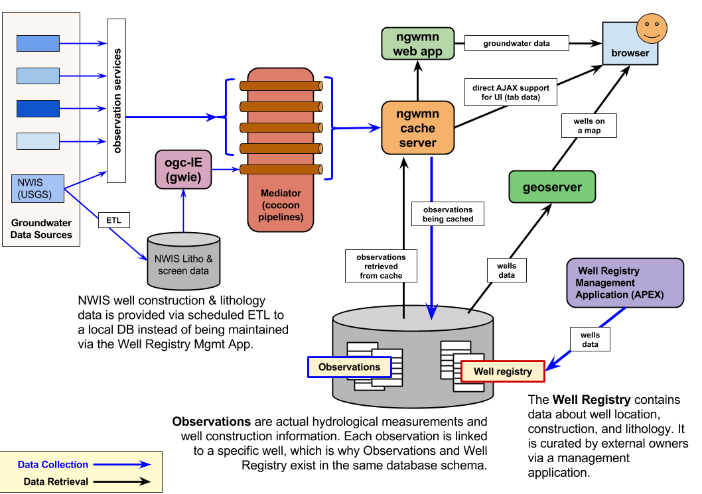

The Parts of the NGWMN.
This is a system diagram of the NGWMN. It looks fairly complicated, which is both correct and fair. NGWMN is built of multiple major components. Their interactions are extremely important.
The various parts, and their actions, are described below the diagram.

The parts:
Groundwater Data Sources
These are agencies that contribute groundwater data to NGWMN. The list is intended to grow over time, but adoption of new contributors appears to be stalled right now.
Observation Services
These services are offered by the Groundwater Data Sources. The services are called by the Mediator when it is assembling groundwater data in response to a query.
Service endpoints are found by inspecting the Mediator's pipelines: all endpoints are referenced in generator components.
NWIS Well Construction/Lithology
NWIS is a partial exception to the model of the Mediator obtaining data directly from the Observation Services exposed by the Groundwater Data Sources. For reasons not directly known (I am guessing performance/convenience of doing it this way, since CIDA has a USGS-internal connection to NWIS), the Lithology (for drilled wells) and Screen (for open wells) data is obtained by a regular (currently 3AM each morning) ETL process and stashed in snapshot tables in the DB Name redacted database.
The most recent snapshot tables are in turn aliased as DB Name redacted (screen data) and DB Name redacted (lithology data). Note: the ETL MUST reestablish the proper permissions or lithology and screen data will vanish for NWIS wells (e.g. New Jersey).
OGC-IE (aka 'gwie')
default web context: / Context redacted
A set of OGC web service implementations intended mainly for internal use. External web service access is expected to be delegated via the NGWMN cache; this expectation has sometimes been relaxed for experimental tests of functionality with external
For NWIS sites, this module's ETL loads only a subset of that data into the dev tier (and maybe QA?). That results in some well sites not being available on the non-prod machines.
Mediator (aka 'cocoon', 'gin', 'gwdp-hub' etc)
default web context: / Context redacted
The Mediator is an Apache Cocoon application, which means that it's a set of processing pipelines that are mapped to characteristics of an HTTP Request. The output of the selected pipeline is used to generate the corresponding HTTP Response. See the Cocoon / Mediator Technical Overview for more detailed information.
What's "Mediation", eh Precious?
Mediation means to obtain data from a primary source, and to formulate that data according to the Mediator's service interface. Mediation means:
- Translating the primary source's representation of the data into the one the Mediator provides to the requestor.
- Reconciliation of semantics across differing interfaces, especially lists, categories, and other keyword-level definitions.
- Guaranteeing the appropriateness of the request-response mapping (in other words, promising that the question and answer embodied in the Mediator's interface is actually fulfilled by the call to the primary source's service.)
Mediation acts to hide the details of the back-end service interface definitions. You can ask the Mediator a question, and receive the answer, according to the Mediator's service interface, without needing to know about the details of corresponding service interfaces offered by the primary sources.
NGWMN Cache
default web context: / Context redacted
The Cache was a later construction than the rest. It was built when it became painfully apparent that the Mediator's real-time latency was far too long. The Cache addresses the problem successfully, being much quicker to return data.
Prefetch
The intent of the Cache is to store the output of the Mediator in advance of any specific query for any particular well's information. This is done by automating the prefetch Web Service calls in a systematic fashion. Prefetching for a given site can also be manually performed via the NGWMN Data Cache Dashboard, a link page that resides at the root of the NGWMN Cache.
Additional Cache Functionality
The Cache also performs some actions that exceed the primary task of caching Mediator output:
- The Cache exposes an AJAX endpoint from which web apps can pull service-specific content in a simplified, lightweight XML format.
- The Cache performs some modifications (mostly flattening) on data retrieved by the normal Core Service API: in other words, the results of a Core API call to the Cache will, at least in some cases, differ from the results of a Core API call to the Mediator for the same service data from the same well. This is probably an implementation flaw.
- The Cache creates bundled zip files for multiple sites and types of data so that users can select and download multiple sites and data types as a single file.
NGWMN Web App
default web context: / Context redacted
NGWMN Geoserver
Well Registry Management Application